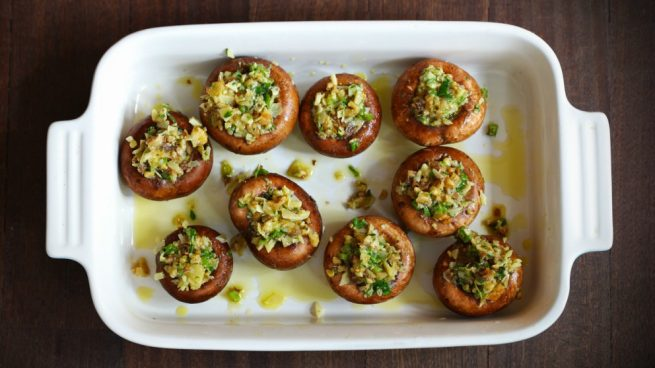

Champiñones rellenos
Un plato ideal para los cockteles de invitados o simplemente para las noches de películas, fácil y simple de elaborar. Lo mejor de todo, vegan.
Ingredientes:
- • 15 champiñones de tamaño mediano y grande
- • 1/2 cda de aceite de oliva
- • 1 diente de ajo picado pequeño
- • 1/4 cdta de pimienta negra
- • 1/4 cdta de cebolla en polvo
- • 1 cdta de orégano (Molido o entero)
- • 1/4 cdta (o a gusto) de merquen
- • 150 gr de queso vegano
Preparación:
- Calentar el horno a 180°C.
- Limpiar los champiñones suavemente con una toalla de papel. Sacar los tallos de los champiñones y cortarlos en cubos pequeños.
- Poner los champiñones sobre la lata del horno levemente aceitada o sobre papel de hornear.
- En un sartén, calentar el aceite y agregar los tallos picados en cubitos con el ajo. Cocinar hasta que estén dorados y el líquido que hayan botado se evapore.
- Aliñar con la pimienta, cebolla, orégano y merquen.
- Incorporar el queso crema y cocinar hasta que se haya derretido e integrado en la mezcla. Apagar el fuego.
- Rellenar los champiñones con la mezcla de queso vegano. Hornear por 20 a 25 minutos o hasta que el relleno esté dorado y los champiñones hayan botado su líquido. Servir inmediatamente.